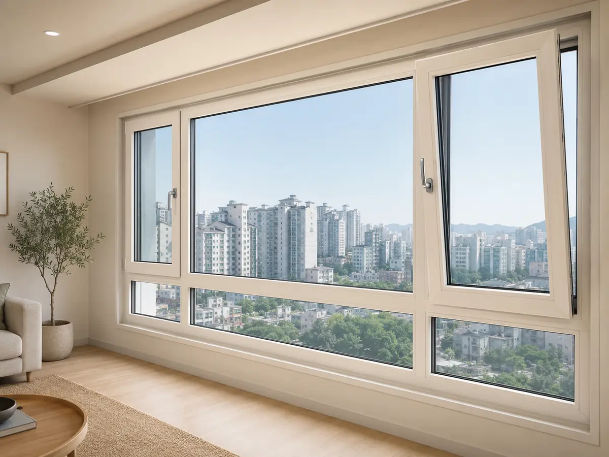

일반 PVC 이중창
15~25만원/㎡ · 자재+시공
슬라이딩(미닫이) 방식의 아파트 표준 창호입니다. 가격이 합리적이고 시공이 보편적이지만, 구조상 기밀성에 한계가 있습니다.
- 프레임
- 슬라이딩(미닫이)
- 유리
- 22~24mm 복층
- 단열
- 1~3등급
- 사용
- 아파트 외창 표준

창호는 단열·기밀·수밀·차음 4축으로 고릅니다. 냉난방비와 결로를 좌우하는 자재인 만큼, 등급(에너지효율·열관류율)을 견적서에 숫자로 명시하는 것이 핵심입니다.
외창은 에너지효율 1등급(열관류율 Uw 낮을수록 좋음)을 권합니다. 슬라이딩(미닫이)은 구조상 기밀에 한계가 있고, 틸트앤턴 방식의 시스템 창호가 단열·기밀이 우수합니다. 다만 결로의 80%는 환기 부족이므로 창을 바꿔도 환기는 필요합니다.
프레임·개폐 방식·유리 구성에 따라 단열 성능이 갈립니다. 사진과 함께 비교하세요.
슬라이딩(미닫이) 방식의 아파트 표준 창호입니다. 가격이 합리적이고 시공이 보편적이지만, 구조상 기밀성에 한계가 있습니다.

틸트앤턴(들창) 방식으로 단열·기밀이 우수하고 결로가 거의 없습니다. 단가가 높고 보수 시 전용 부품에 의존합니다.

슬림한 알루미늄 프레임으로 디자인이 깔끔하고 녹슬지 않습니다. 단열성이 낮아 외창 단독으로는 부적합하고, 발코니·내창에 어울립니다.
열관류율(Uw)은 낮을수록 단열이 좋습니다. 등급은 견적서에 숫자로 명시돼야 비교가 됩니다.
발코니 미확장 기준(외창 + 분합문). 시점·브랜드·창 개수에 따라 변동합니다.
| 평형 | 일반 PVC 이중창 | 시스템 창호 |
|---|---|---|
| 24평 | 500~800만원 | 1,200~1,800만원 |
| 34평 | 800~1,200만원 | 1,800~2,800만원 |
| 45평+ | 1,200~1,800만원 | 2,500~4,000만원 |
← 표는 좌우로 넘겨 볼 수 있어요
외관 변경·소음·실측 등 교체에는 사전 준비가 많습니다.
창을 바꿔도 환기를 안 하면 결로가 다시 생깁니다.
“○○브랜드 창호 일체”라고만 적힌 견적서는 비교가 불가능합니다. 아래 항목이 숫자로 명시돼야 합니다.
| 항목 | 견적서 표기 예 | 보는 법 |
|---|---|---|
| 브랜드·시리즈 | 브랜드명 + 시리즈명 | 같은 브랜드도 시리즈별 등급이 다름 — 시리즈까지 명시 |
| 열관류율(Uw) | 1.0 W/㎡K · 에너지효율 1등급 | 낮을수록 단열 우수. 외창은 1등급 권장 |
| 유리 구성 | 24mm 복층 로이 + 아르곤 | 로이코팅·아르곤 충진이 단열 체감 좌우 |
| 프레임 폭 | 발코니 이중창 245mm | 실측 후 기존 창틀 폭과 호환 확인 |
| 정품 확인 | 프레임 각인·홀로그램 | 비정품 프로파일 방지 — 시공 후 각인 사진 요청 |
| 부속 포함 범위 | 방충망·핸들·외부 실리콘 | 미세방충망·외부 마감이 별도인지 확인 |
← 표는 좌우로 넘겨 볼 수 있어요
같은 브랜드도 시리즈별로 등급이 다릅니다. 실제 성능은 시리즈(모델)별 KS 시험성적서의 열관류율·기밀 등급으로 확인하세요.
| 브랜드 | 주요 강점·제품군 | 검토 시 살펴볼 점 |
|---|---|---|
| LX하우시스 지인(Z:IN) | 시리즈 폭넓음 · 전국 AS망 | 시리즈별 열관류율·기밀 등급 확인 |
| KCC 창호 | 자사 유리(KCC글라스) 수직계열 | 유리 사양(로이·아르곤) 구성 확인 |
| 현대L&C | 아파트 특판 실적 · 라인업 다양 | 기존 창이 같은 브랜드면 부분 교체 호환 확인 |
| 이건창호 | 알루미늄 시스템창호 라인업 | 시스템창호 시리즈별 성능 시험성적서 확인 |
| 중소 창호(윈체 등) | KS 등급 제품 보유 | KS 인증·시험성적서·보증 조건 확인 |
시공 후 프레임 각인·홀로그램 사진을 받아 정품 여부를 확인하세요.
단열·기밀 성능은 시스템 창호가 우수하고 결로가 거의 없습니다. 다만 단가가 높고 보수 부품 의존이 큽니다. 예산과 세대 조건(층·조망·소음)에 따라 일반 이중창 1등급도 충분한 경우가 많으니, 등급(Uw)을 기준으로 비교하세요.
창을 통해 열이 빠져나가는 정도를 나타내는 값으로, 낮을수록 단열이 좋습니다. 외창은 에너지효율 1등급(대략 Uw 0.8~1.2) 수준을 권합니다. 견적서에 숫자로 표기돼 있어야 비교가 됩니다.
결로의 대부분은 환기 부족이 원인입니다. 시스템 창호로 바꿔도 하루 2~3회 짧은 환기를 하지 않으면 실내 습기가 빠지지 않아 결로가 다시 생길 수 있습니다.
프레임의 각인·홀로그램으로 확인합니다. 비정품 프로파일 사용을 방지하기 위해 시공 후 각인 사진을 요청해 두는 것이 좋습니다.